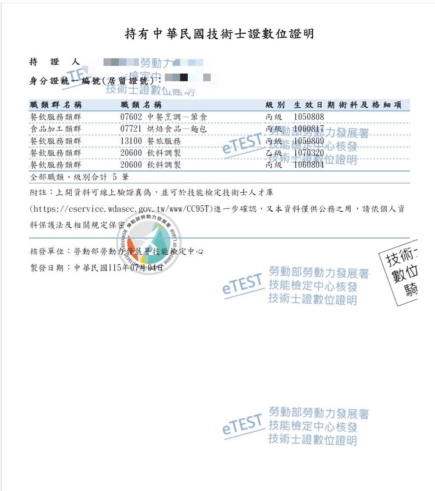
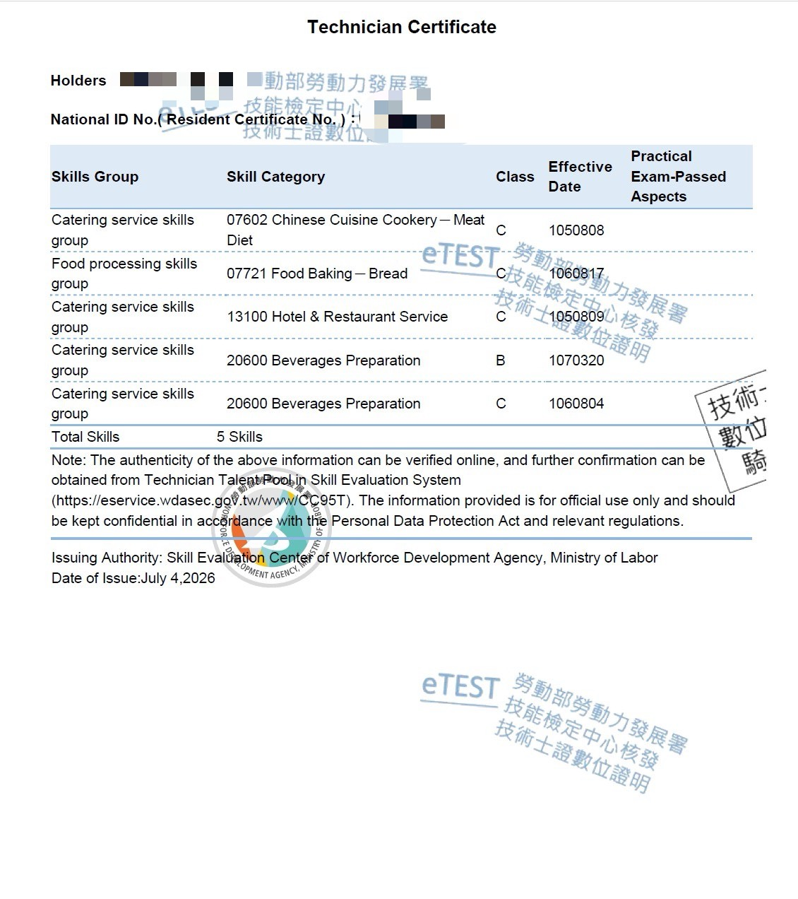

作者背景概況
教育經歷
- 113年 臺灣警察專科學校 行政警察科 畢業
- 111年 國立屏東大學 應用英語學系 畢業
- 107年 三信家商 實用技能餐飲科 畢業
工作經歷
- 114年2月～今 借調支援臺灣警察專科學校
- 113年10月～114年2月 保安警察第六總隊
國考經歷
- 115年 外事警察人員 三等特考？
- 113年 行政警察人員 四等特考 及格
英語程度 (113年TOEIC考試)
- TOEIC－聽力讀閱讀 825/990分
- TOEIC－口說160/200分、寫作170/200分


專題研究
- 探討學校情境中大學生語言請求行為之研究 Study on the Speech Act of Requests by College Students in School Settings
個人興趣
- 英語教學：音標、文法、句子結構分析
- 自學鋼琴
- 慢跑、游泳
餐旅相關技術士證照
- 飲料調製 乙級
- 飲料調製 丙級
- 烘焙麵包 丙級
- 餐旅服務 丙級
- 中餐葷食 丙級


關於作者與創站緣由
一、從高職時期萌生的網站想法
我在高職時期，就曾經思考過學習網頁架設。當時我對網站有興趣，也隱約覺得它可能成為未來表達理念與分享內容的工具， 但由於始終找不到具體的學習方向與實作方法，這個想法便一直停留在腦海裡，沒有真正開始行動。 直到近年，我才逐漸意識到，若能把網頁設計與我最重視的英語學習經驗結合，也許可以做出一個真正屬於自己的教學平台。
二、成長背景與早期學習困境
回顧自己的成長歷程，我的學習起點其實並不好。從小家庭教育資源並不完整，功課指導也不完善，國小時期曾經虛度不少時間，學業表現大約從小學四年級開始明顯下滑。 不過，即使那時整體成績不理想，我心中一直有一個很深的念頭：「我想和外國人溝通，想把英文學好。」 我仍然記得，小時候曾躺在床上對自己說，希望未來有一天能真正使用英文與外國人交流。 這個看似單純的想法，後來慢慢成為支撐我持續投入英語學習的重要動力。
三、從排斥到建立基礎的英文學習歷程
然而，我的英語學習一開始並不順利。由於家人工作不便，從小學二年級開始，我被送到住家附近的安親班，並附帶補習英文。 但那段經驗對我而言更多是排斥與挫折，而不是幫助。當時我不但不喜歡那樣的學習環境，也覺得補習內容沒有真正補到我的弱點，功課檢查流於形式，成績也沒有因此改善。 後來我甚至向阿姆反映那裡的作業檢查並不確實，小學五年級時才順利退出安親班。 即使如此，我的英文能力仍然沒有好轉，國小時期英文成績幾乎都不及格，學校教過的內容我也常常聽不懂，就算有補習，反而像是把基礎越補越空。
四、喬頓補習班帶來的轉機
真正的轉機，是後來進入家裡附近的「喬頓」補習班之後。從國小小四一路到高三，我都在那裡持續學習英文，也是在那段期間，我才真正開始建立英語基礎。 補習班的莊老師對我影響很大，她一開始教我學習一些機本自然發音(Phonics)規則及 K.K. 音標。 雖然當時的我還不明白音標到底有什麼用途，只是先把符號和讀法記住，但這些知識後來成了我理解英文發音與拼讀的重要基礎。 小學五、六年級時，我還曾先修國一英文課程，那時其實相當挫折，一度想放棄補習，因為每次小考都不及格，還得補考，但我還是撐了下來。
五、國中時期真正開竅
到了國中，我的英語學習才真正開始「開竅」。 我認為那一方面是因為自己從小就一直有想學好英文、想跟外國人溝通的念頭，另一方面也是因為年齡漸長後，對抽象概念的理解能力提升，開始比較能掌握文法架構與語言邏輯。 再加上過去學過的 K.K. 音標逐漸派上用場，我慢慢把發音、拼字、文法與閱讀理解串成一個比較完整的學習系統。 也因為如此，在國中各科成績中，英文成為我表現最好的科目，和其他科目形成很大的對比。 這段經歷讓我深刻體會到：英語不是靠死背就能真正學好，而是需要一套能讓學習者理解整體架構的方法。
六、高職餐飲科的選擇與轉折
之後我進入高職，就讀高雄市三信家商餐飲實用技能班。當初會做這個選擇，主要是因為國中時評估自己的學科能力，認為如果去讀一般高中，可能會在較多科目上遭遇很大挫折； 另一方面，我也想嘗試餐飲實作，覺得做菜似乎是一條可以發展的路。不過實際進入餐飲技職體系後，我很快就發現那並不是我真正適合的方向。 餐飲工作講求高度即時反應與現場運作，而我個性上比較重視條理、結構與系統化處理事情，因此廚房那種節奏與工作型態，和我的性格其實並不相符。
七、在技職體系中培養自學與執行力
雖然如此，我並沒有因此鬆懈，反而仍然努力把握三信所提供的資源。 由於學校在餐飲技職方面有完整的培訓與檢定制度，我先後取得中餐、烘焙麵包、飲料調製、餐旅服務等多項丙級技術士證照。 之後我也利用學校提供的乙級飲料調製培訓與在校檢定資源，自學並熟記九十道雞尾酒譜，幾乎可以做到一字不漏地背誦， 再加上我本身的英文能力，對於酒類名稱與相關術語的掌握也較有優勢，最後順利通過乙級檢定。 也因為這張證照，我得以透過技優甄審管道，進入國立屏東大學就讀。
八、大學時期對英語教學的再認識
進入屏東大學應用英語學系後，我更確定自己真正喜歡的仍然是英語領域。 除了正規課程之外，我也對英語教學產生濃厚興趣，開始主動了解教學方法與語言學相關知識，甚至自讀語言學（linguistics）內容。 在這個階段，我第一次真正意識到：網頁設計與英語教學之間其實具有結合的可能性。 因為如果教學內容能透過網站呈現，就不再只是紙本教材、口頭講解或單向課堂，而是可以被整理成系統化、可重複使用、可逐步擴充的學習平台。 不過當時的我雖然已經看到這個方向，卻還沒有能力把想法具體實踐出來。
九、職涯選擇與現實考量
原本我曾考慮在大學畢業後繼續攻讀語言學研究所，並修習中等教育學程，朝英文教師的方向前進。但到了大三時，我開始更現實地思考未來的職涯發展。 當時系主任曾詢問我是否有意願參與科技部專題研究計畫，我也曾希望透過研究與作品累積學術成果。 不過，隨著我對未來道路的反覆思考以及家裡經濟因素，我逐漸意識到文組畢業後的就業與薪資條件較有限；更重要的是，雖然我喜歡教學，卻非常不喜歡私人補教業的運作模式；。 我始終認為，很多補習班更在意市場與營利，而不是學生是否真正進步，這和我心中理想的教學初衷有很大落差。 也因此，我最終決定轉換方向，在大三下到大四期間準備警專考試，並在111年大學畢業後無縫接軌進入警專就讀。
十、進入警職後仍未放下英語理想
即使進入警職體系，我對英語與教學的興趣仍然沒有消失。我於113年警專畢業，並於同年10月中旬分發擔任基層員警。 由於一般警察實務工作中，英語使用機會相對有限，因此我一直希望能考取三等外事警察，讓自己的英語能力能夠與職涯有更直接的結合。 114年的三等特考我未能上榜，但我並沒有放棄，115年再次報考，並參加了6月13日至15日的考試，這兩年備考期間半工半讀，讀書時間佔據了1500小時，幾乎犧牲自己休息與興趣。 也正是在第二次考試結束後、從6月22日至8月14日放榜前的這段空檔中，我重新回到多年以前曾經出現過的想法： 利用這段時間從基礎開始學習 HTML 與 CSS，看看自己是否能一步一步做出一個屬於自己的免費英語教學網站。
十一、網站理念與教學目標
對我而言，這不只是「學做網站」而已，而是一次把過去所有學習經驗重新整合的實踐。 網站的核心理念，是結合我自身的英語學習歷程與教學觀察，建立一個免費、系統化、真正對學習者有幫助的平台。 我特別想處理的一個問題，是台灣英語教育中長期存在卻常被忽略的發音基礎問題。 以我的學習經驗來看，學校英語教育體系很少真正教學生如何使用 K.K. 音標，也幾乎不會帶學生理解 IPA 音標系統； 可是學生一旦查字典、看教材或接觸劍橋字典等工具時，卻又會直接遇到這些符號，也許因為不會、不熟而視為不見。 也許天生的學霸可以單純利用自然發英精通英文。 但如果學習者不懂音標，只能依賴聽發音、模仿或用不完整的自然發音規則亂猜，久而久之就很容易在基礎上出現斷裂，也會大幅阻礙後續的單字、聽力與口說進步。
十二、希望建立屬於自己的學習平台
因此，我希望未來這個網站的教學內容，能夠從我自己走過的路出發，免費帶領學習者理解 K.K. 音標，並進一步過渡到 IPA 符號系統，幫助真正有心學英文的人把基礎打穩。 我想做的，不是一個只有零碎筆記或隨興分享的頁面，而是一個能夠把經驗、知識與教學理念整合起來的學習網站。 若未來我真的能一步一步完成這個作品，並把它正式上架，那麼它對我來說就不只是網站本身，而是我長期以來對英語學習、教學理想與自我實踐的一種延伸。